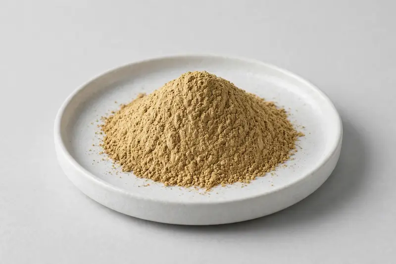

Bala — Sida cordifolia root botanical for traditional Ayurvedic vitality formulations.

Overview
Bala extract is derived from the root of Sida cordifolia and is commonly discussed in alkaloid-controlled grades. It features in traditional Ayurvedic vitality-positioned formulations and multi-herb blends. As a Xi'an-based trading company, we source through partner producers rather than operating our own plant, and we confirm feasibility after reviewing your target specification.
Specifications below reflect commonly requested options in the market — not a stock list. Share your target spec and we'll confirm exactly what we can supply, honestly.
| Specification | Details |
|---|---|
| Botanical identity | Bala root extract powder |
| Source material | Root |
| Marker compound | Commonly requested spec grades: alkaloid-controlled grades; actual specs confirmed on inquiry |
| Appearance | Light brown to yellowish-brown fine powder |
| Mesh size | Typically 80–100 mesh (confirm per inquiry) |
| Testing | COA/TDS arranged on request; scope agreed per your spec |
Applications
Documentation
We don't claim in-house labs or certifications we don't hold. COA and TDS documents can be arranged on request, and testing scope is agreed against your specification before supply.
FAQ
Related products
Nattokinase (fermented soybean enzyme)
Key marker: 20,000-40,000 FU/g
View specs →Spermidine (wheat germ-derived polyamine)
Key marker: 0.5-1% Spermidine
View specs →Phosphatidylserine
Key marker: 20-50% PS
View specs →Cuminum cyminum
Key marker: Cuminaldehyde Content
View specs →Picrorhiza kurroa
Key marker: Kutkin Content
View specs →Send your target spec and volumes — we'll respond with a tailored quotation.
Request a Quote